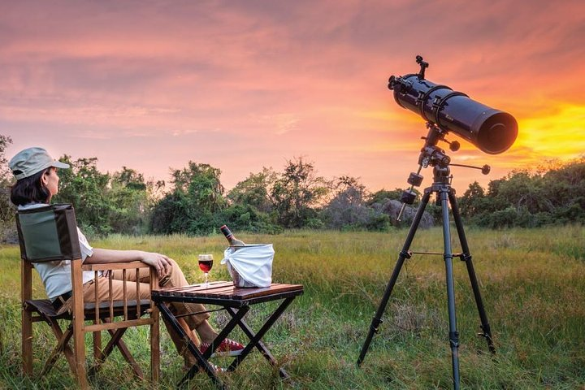
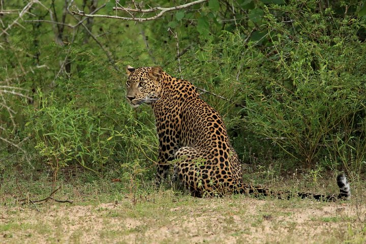

Wilpattu National Park, located on the northwest coast of Sri Lanka, is the largest national park in the country, covering an expansive area of over 1,300 square kilometers. Known for its diverse ecosystems, abundant wildlife, and scenic landscapes, Wilpattu holds a special place in Sri Lanka's conservation and natural heritage.The park is renowned for its rich biodiversity, housing a variety of wildlife species.. The varying habitats within the park contribute to its high ecological diversity.

Wilpattu is known for having a relatively high density of leopards compared to other national parks in Sri Lanka. The park's diverse landscape, which includes dense jungles, open grasslands, and numerous water bodies, provides an ideal environment for leopards to thrive.The varied ecosystems within Wilpattu offer a mix of habitats that are well-suited for leopards. The dense vegetation provides ample cover for these elusive big cats, allowing them to stalk and ambush prey effectively. Additionally, the open grasslands create spaces for leopards to move and hunt.